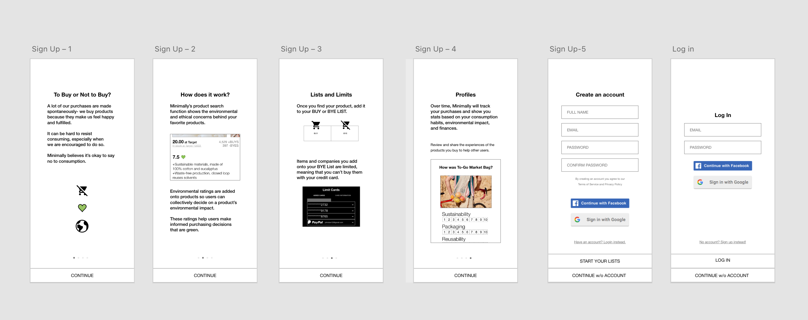
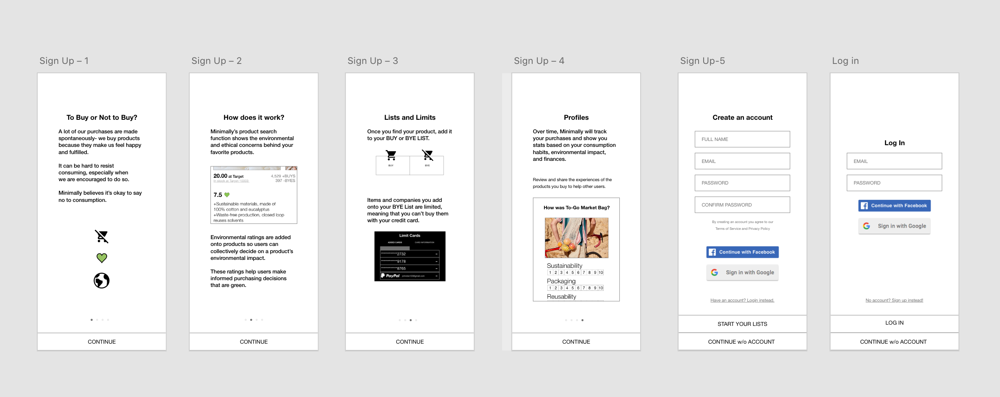
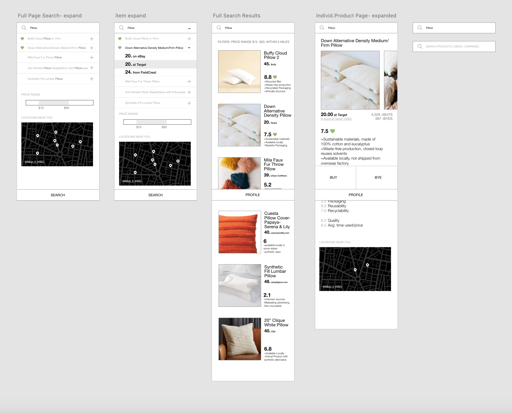
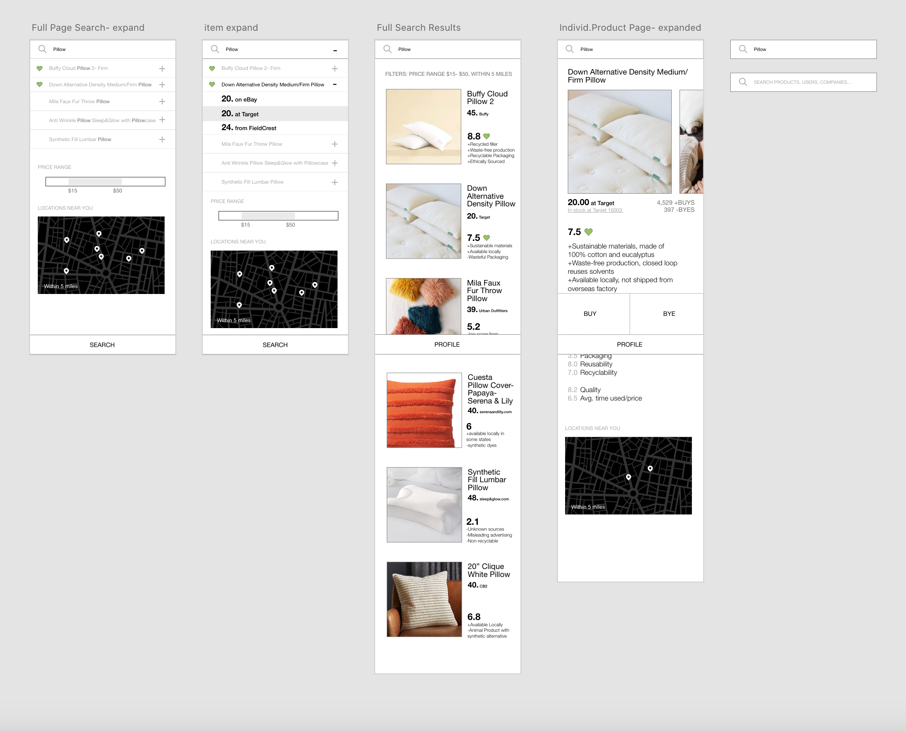

How does consumerism contribute to our environmental footprint? Can the reduction of consumerist influences help reduce our consumption?
We are told too often to buy and consume, and not often enough to reduce. Planned and perceived obsolescence make us believe that we need to buy, when in reality we could live well with a few belongings.
User Survey
What categories of consumer products do you purchase outside of necessities?
What prompts or influences you to purchase these goods?
I purchase from companies that are...
In an average month, how often do you recycle or reuse your purchases? Are they still in use a month later?
We overconsume products that are unecessary and wasteful, which fuels demand and the vicious cycle of harm towards the environment. Pollution of air, land, and sea can be reduced with anti consumption or minimalism.
This is a tracking app that allows users to input products that they wish to buy, and points out whether a similar item can be bought secondhand, if the product cannot be recycled, or if there is a greener or local alternative. Preventitive, rather than mitigative measures are encouraged.
This app aims to educate users about environmental harm that products can cause and discourage unecessary spending.
User Flow
Sketches of user flow and smaller interactions added in mockup.
The high fidelity prototype built off of paper prototypes features a simple interface with a main dock and search bar on most pages. The app revolves around the user's profile, which is the main branch of the pathways.
User testing of the prototype revealed that certain elements were unclear in their function and that some functions needed additional explanations.
Final Product
Changes made to high fidelity prototype based on several user tests.
Added tutorial section and reduced visual clutter.


 



 
